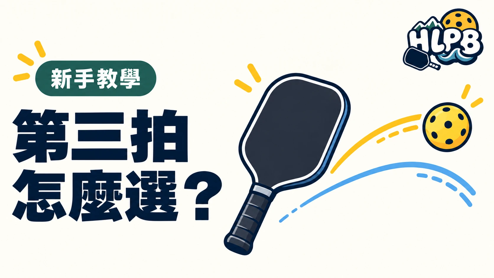

第三拍，是發球、接發球之後，發球方接著打出的那一拍。
雙打中，接發球方可能已經往廚房線移動，發球方則仍在後場。第三拍因此常用來處理站位上的差距，不只是想辦法把球打過網。
| 比較項目 | 放短（Drop） | 抽球（Drive） |
|---|---|---|
| 主要用途 | 讓球柔和落入對方廚房區，爭取往前移動的機會 | 用較快的球施壓，尋求較容易處理的下一球 |
| 控制重點 | 高度、力道與落點 | 速度、方向與穩定性 |
| 常見失誤 | 太高被攻擊，或太短掛網 | 過度用力出界，或被快速擋回 |
| 後續處理 | 看對方回球，再決定前進多少 | 仍需準備下一拍，不能打完就直衝網前 |
USA Pickleball 教材將放短與抽球列為第三拍的常見選擇，並指出較高的接發球可能提供抽球機會。這是判斷方向，不代表每一顆高球都必須抽球。
放短不是越輕越好，抽球也不是越大力越好。兩者都需要控制，讓自己有能力繼續處理下一拍。
打完第三拍，不代表一定可以安全走到廚房線。是否前進，要看球的品質與對方的回球。
第三拍抽球後，再利用第五拍放短，也是專業教材介紹的一種組合。放短與抽球可以接續使用，並非只能選一種打法。
剛開始練習，可以先分開練兩種球路，再學習選擇。先求穩定把球送到想要的位置，比急著追求一拍得分更有幫助。
參考來源：USA Pickleball 教學資源、USA Pickleball 教學資源、USA Pickleball 教學資源
最後查證：2026-10-10｜HLPB 編輯整理，參考來源見內文
返回文章列表